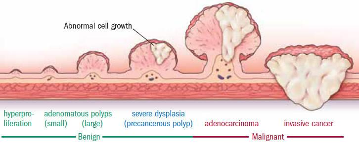

Colon Polyps
Colon polyps are small, often precancerous growths that form from the interior lining of the bowel. Polyps generally don’t cause symptoms, so they go undetected. However, if one does experience symptoms, it would be presented as blood in the stools, change in bowel movements, and fatigue. It's important to have them removed since they can lead to more serious conditions, such as cancer. Most polyps are not cancerous. The type of polyp, its location, and its size will be the indicator to determine if they will begin producing cancer cells.
Treatment includes a colonoscopic polypectomy, which is a procedure that will take a sample of the polyp to be tested. This will indicate if the polyps are cancerous or benign.